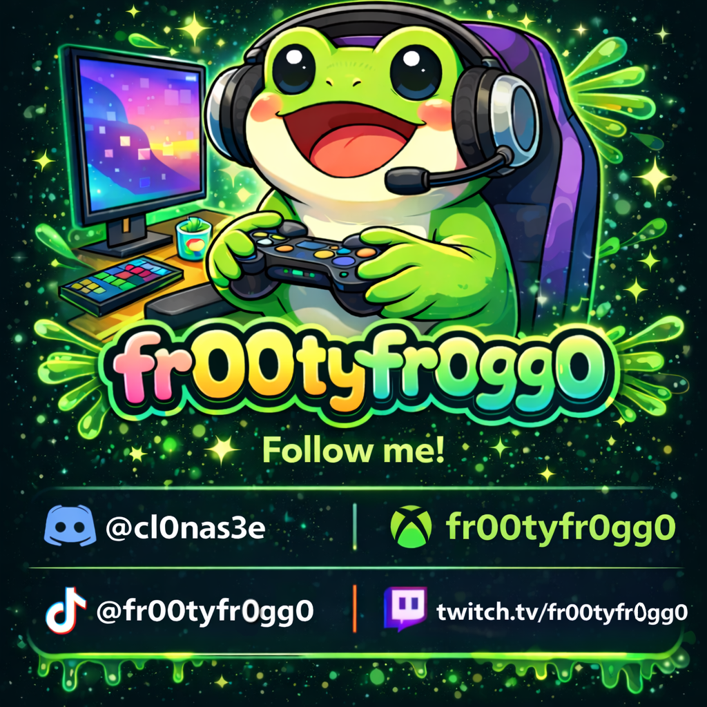
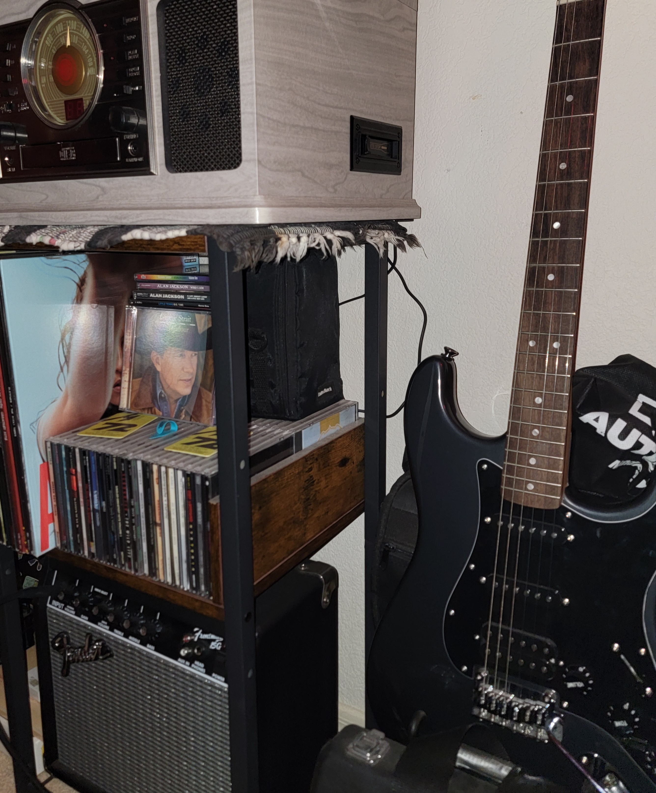
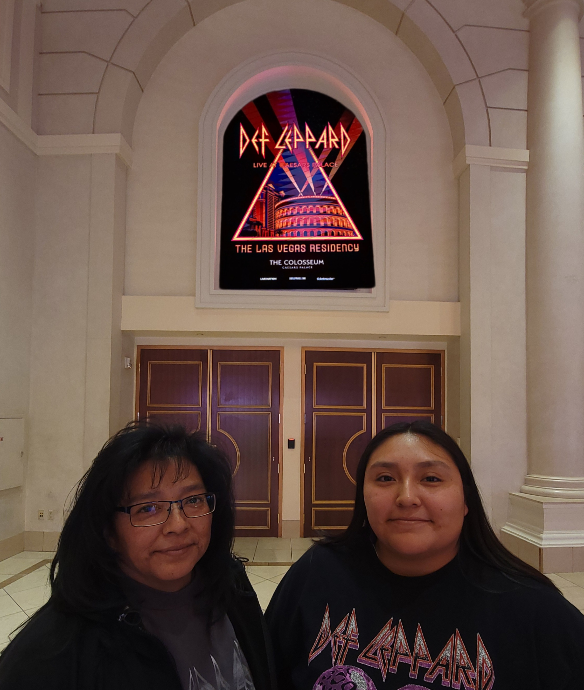

My Hobbies

Video Games & Content Creation
I enjoy playing Fortnite and GTA V. I also create TikToks featuring funny lowlights and gameplay moments.

Guitar
I enjoy playing the guitar and learning different songs, especially rock and country music. It's a creative outlet that challenges me to stay patient and keep improving.

Live Music & Concerts
I enjoy attending live concerts and music events. Experiencing music in a live setting is energizing and it allows me to explore different genres and artists.